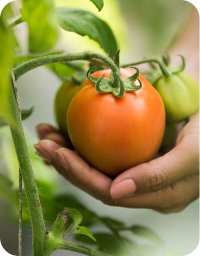
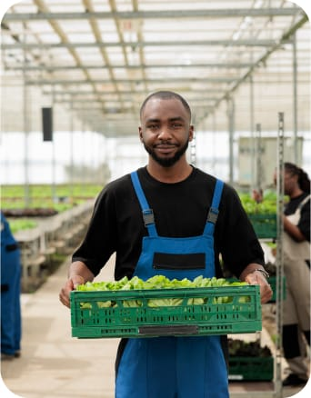
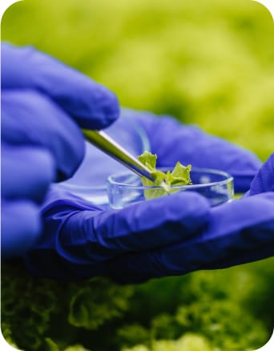
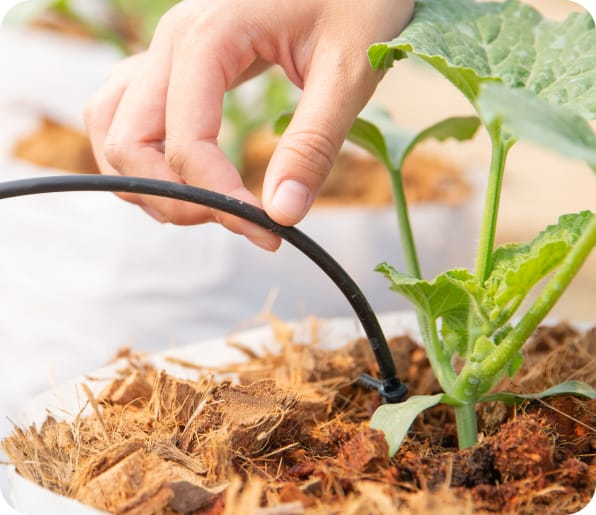
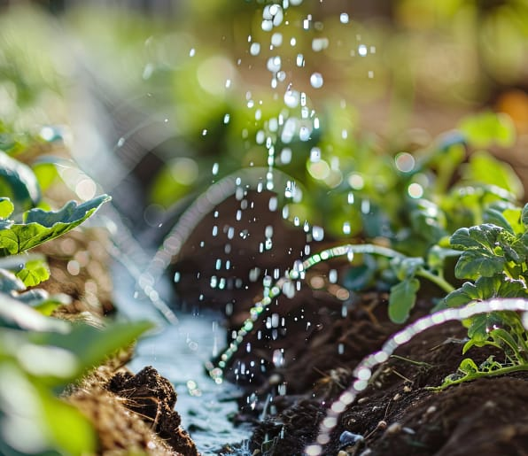
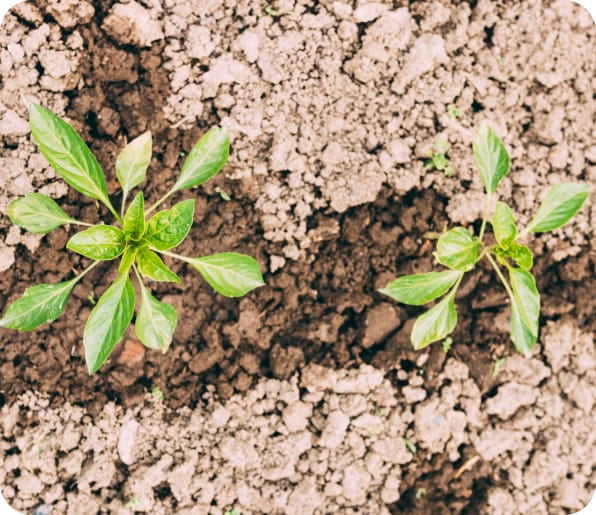
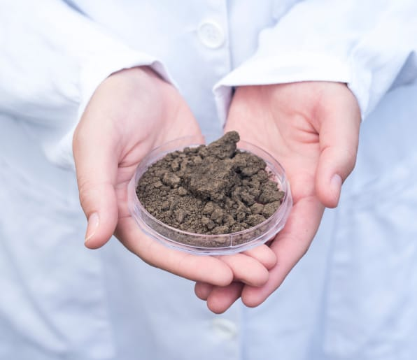

Growing Green, Living Clean
Sustainability at Heart of Farming
Sustainability Practices
Green Innovations, Brighter Future
- 
Organic Farming
Fostering soil health, banning synthetic inputs. Organic farming avoids the use of synthetic pesticides and fertilizers, ensuring that the food produced is beneficial for consumers and the environment alike.
- 
Permaculture
Designing agricultural ecosystems intended to be sustainable and self-sufficient. Permaculture principles focus on the harmonious integration of the landscape and people, providing food, energy, shelter, and other material and non-material needs in a sustainable way.
- 
Regenerative Agriculture
Enhancing and sustaining the health of ecosystems for future generations. This approach to farming practices aims to rehabilitate and enhance the entire ecosystem of the farm by placing a heavy premium on soil health, water management, and biodiversity.
Example of Positive Impact
Through the adoption of organic farming practices, our network has significantly reduced chemical runoff into local waterways, leading to improved water quality and contributing to healthier aquatic ecosystems. By implementing permaculture designs, we've increased biodiversity on our farms, creating habitats for beneficial insects and wildlife, which in turn helps to naturally control pest populations and pollinate crops.
Regenerative agriculture practices have revitalized degraded lands, increasing soil fertility and crop yields. This holistic approach to farming has not only helped mitigate climate change by sequestering carbon in the soil but also empowered our community by providing them with healthier food options and inspiring other farmers to adopt sustainable practices. Collectively, these initiatives showcase our dedication to environmental stewardship and community well-being, setting a precedent for future generations.
Water Conservation
Implementing innovative irrigation techniques and rainwater harvesting systems to minimize water waste and ensure every drop is used efficiently.
- 
- 
Success Story
Our water conservation efforts have led to a 40% reduction in water usage across our network of farms. By adopting drip irrigation and rainwater harvesting, we've not only saved millions of gallons of water but also supported surrounding ecosystems to thrive. This initiative has served as a model for sustainable water use in agriculture within our community, inspiring other farmers to adopt similar practices.
Soil Health Management
Focusing on organic matter enrichment, crop rotation, and cover cropping to maintain and enhance soil fertility and structure.
- 
- 
Success Story
Through dedicated soil health management, one of our flagship farms has seen a significant increase in soil organic matter, leading to higher crop yields and reduced erosion. The practice of cover cropping and minimal tillage has improved soil biodiversity, resulting in more resilient crops and reduced need for chemical inputs. This success story highlights the vital connection between healthy soil and sustainable agriculture, encouraging wider adoption of these practices.
Eco-Friendly Packaging and Practices
Packaging with Planet in Mind
Description
In our relentless pursuit to protect the planet, we've revolutionized our packaging and shipping processes to reduce waste and minimize our environmental footprint. We prioritize the use of sustainable packaging materials that are biodegradable, recyclable, and compostable, ensuring that our products reach you with minimal environmental impact. Furthermore, we've partnered with carbon offset programs to counteract the greenhouse gas emissions associated with transportation. These efforts signify our commitment to not just providing quality products but doing so in a manner that respects and preserves our natural world.
Initiatives
-
Biodegradable Plant-Based Packaging
Utilizing packaging made from materials like cornstarch and mushroom mycelium, we offer containers and wraps that can completely decompose in a compost environment, leaving no harmful residues behind.
-
Recycling Incentive Program
We encourage our customers to recycle our packaging by providing incentives for returning used packages or participating in community recycling initiatives, furthering the lifecycle of the materials used.
-
Renewable Energy-Powered Logistics
Our shipping operations are powered by renewable energy sources, reducing reliance on fossil fuels and lowering the carbon emissions associated with transporting our goods to your doorstep.